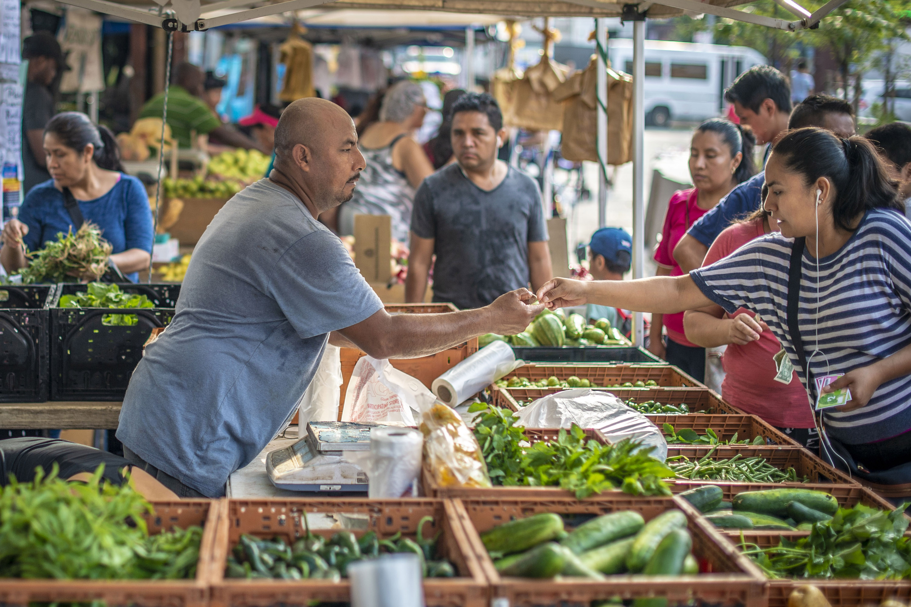
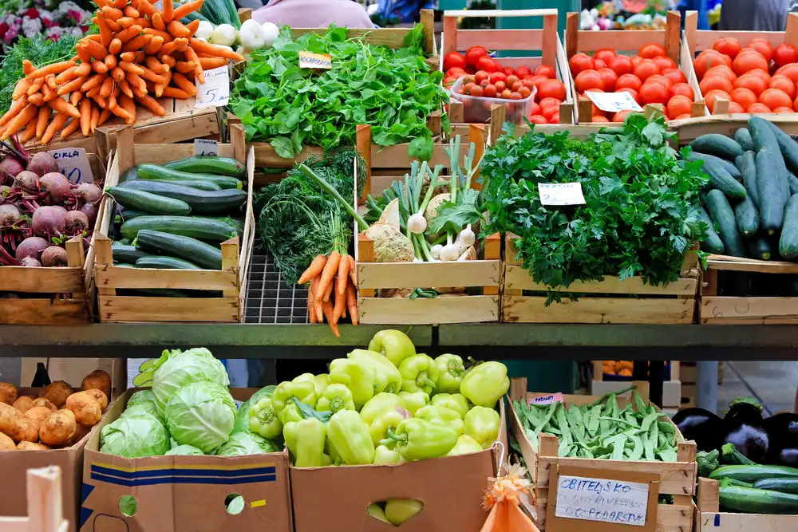
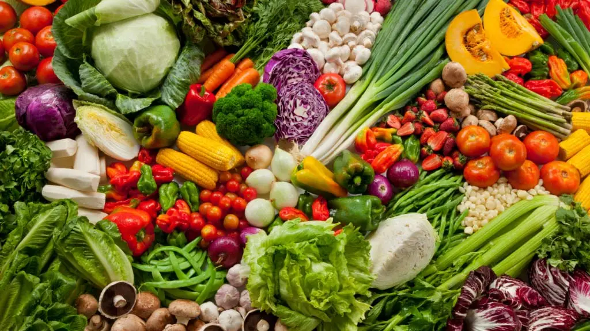

A Farmers' Market is a physical retail marketplace intended to sell foods directly by farmers to consumers. Farmers' markets may be indoors or outdoors and typically consist of booths, tables or stands where farmers sell their produce, live animals and plants, and sometimes prepared foods and beverages.
Farmers markets play an important role in local communities with fresh fruits, vegetables, baked goods, and other locally produced products while supporting farmers and small businesses.
NYC has over 100 farmers markets operating across all five boroughs


